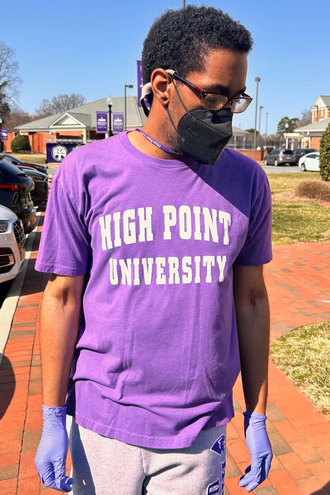

My name is Matthew Lyons and I am a Computer Science major. I chose the major that I did because I've always been around technology. I've interacted with various electronic devices ever since I was young: televisions, game consoles, and computers of various shapes and sizes. These experiences accumulated into a desire to learn about the ins and outs of these complicated, yet fascinating items.
I chose High Point University because it is a very acclaimed school. Its initial presentation was truly outstanding and it lives up to the extraordinary standard that it has set for itself. The personnel are also very welcoming and courteous, which is subjectively important for a school to prioritize. As of the second semester of my junior year, I believe that I made the right choice to come here. So far, I've had personal experience with Python, C++, HTML, and CSS.
In my spare time, I mainly play video games. This primarily refers to games on the Nintendo Switch, seeing as I grew up with various consoles that the company has made. I also listen to music, having grown fond of house, instrumental jazz, and other relaxing, yet soulful genres.